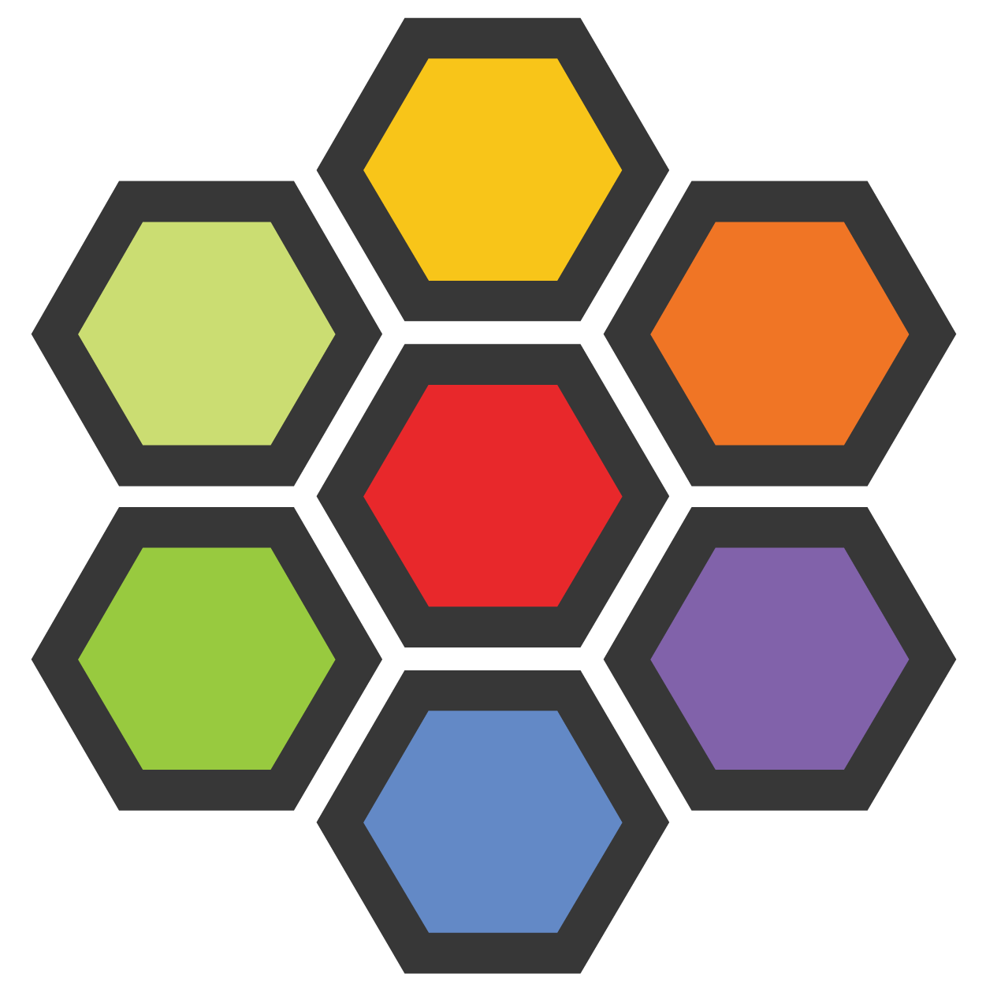

1 Control-plane
talosctl gen secrets
talosctl gen config --with-secrets secrets.yaml node-01 https://192.168.1.100:6443
Создадим файл патча, nameservers: укажите адрес dns сервера
nano patch.yaml
machine:
network:
nameservers:
- 192.168.1.220
cluster:
network:
cni:
name: none
proxy:
disabled: true
talosctl machineconfig patch controlplane.yaml --patch patch.yaml -o controlplane_patched.yaml
talosctl apply-config --insecure -n 192.168.1.100 --file controlplane_patched.yaml
Ожидаем минут 10.
talosctl bootstrap --nodes 192.168.1.100 --endpoints 192.168.1.100 --talosconfig=talosconfig
Ожидаем ждём минут 4.
Скачиваем kubeconfig файл для kubectl
talosctl kubeconfig -n 192.168.1.100 --endpoints 192.168.1.100 --talosconfig=talosconfig
При помощи Helm установим CNI плагин cilium

helm install cilium cilium/cilium --version 1.18.0 -n kube-system
helm upgrade cilium cilium/cilium --version 1.18.0 --namespace kube-system --set ipam.mode=kubernetes --set kubeProxyReplacement=true --set securityContext.capabilities.ciliumAgent="{CHOWN,KILL,NET_ADMIN,NET_RAW,IPC_LOCK,SYS_ADMIN,SYS_RESOURCE,DAC_OVERRIDE,FOWNER,SETGID,SETUID}" --set securityContext.capabilities.cleanCiliumState="{NET_ADMIN,SYS_ADMIN,SYS_RESOURCE}" --set cgroup.autoMount.enabled=false --set cgroup.hostRoot=/sys/fs/cgroup --set k8sServiceHost=localhost --set k8sServicePort=7445 --set ipam.mode=kubernetes --set hubble.enabled=true --set hubble.relay.enabled=true --set hubble.ui.enabled=true --set l2podAnnouncements.interface="enp0s3" --set devices=enp0s3 --set operator.replicas=1
2 Worker
talosctl apply-config --insecure -n 192.168.1.200 --file worker.yaml
После ждём минут 10...
talosctl apply-config -n 192.168.1.200 --endpoints 192.168.1.200 --talosconfig=talosconfig --file worker.yaml